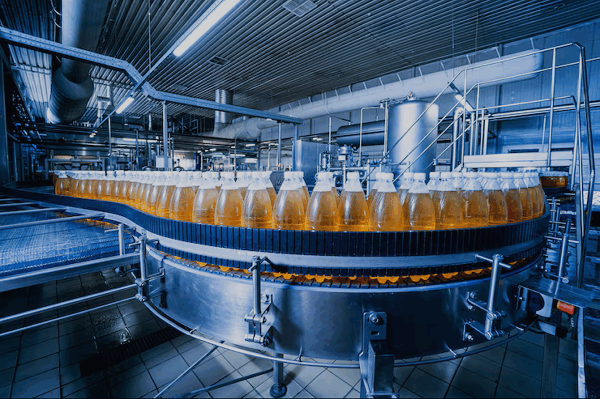

Food & Beverage
How SANPAR serves the food & beverage sector with precision thermal engineering solutions.
Food & Beverage Industry
Risk of Moisture in Food & Beverage Industry.
Food and Beverage Industry is one of the largest industries in the world, with a global market size of over $7 trillion. The industry includes a wide range of businesses, from small independent producers to large multinational corporations.
Our Air dryers and filters ensure the clean pure dry air for various processes and applications.
SANPAR also strive to provide customised thermal solution to food and beverage industry where refrigeration is used to keep food products at low temperatures, In Heating is used to cook, pasteurize, and sterilize food products, some processes require precise temperature control to achieve the desired texture, flavour, and color. Our solutions will ensure the desired outcomes.

Applications of Air Dryers in Food & Beverage Industry.
Applications of our products in Food & Beverage Industry
SANPAR Compressed air dryers, such as refrigerated dryers and desiccant dryers, are often used to remove moisture and other contaminants from the compressed air, ensuring that the compressed air used in the food and beverage industry is clean and free from contaminants, which can help to improve the quality and safety of food products. Beverages, such as beer, wine, and soft drinks, are sensitive to moisture, and even small amounts of moisture can affect their taste, aroma, and shelf life. Moisture can also promote the growth of bacteria and other microorganisms, leading to spoilage and potential health hazards.
The presence of moisture in the food industry can pose significant risks to product quality, safety, and shelf life. Moisture can come from various sources, such as the ingredients, the environment, or the production process itself. Regardless of the source, excess moisture can create an environment that is conducive to the growth of bacteria, mold, and other microorganisms. These microorganisms can cause spoilage, degradation of product quality, and even pose health risks to consumers. Moisture can also contribute to the corrosion of equipment used in the food industry.
Need Solutions for Your Industry?
Our engineering team designs custom thermal solutions for your specific application requirements.